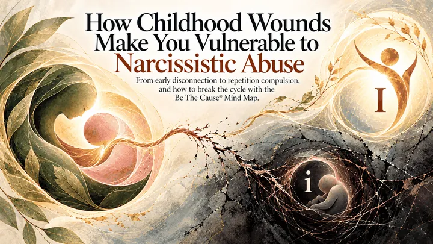

Home
Articles by Dr. Judy Rosenberg
Narcissistic Abuse Recovery Blog
Insights on healing, trauma bonds, and finding your way back to yourself
All articles
17 articles

Narcissistic AbuseHow Childhood Wounds Make You Vulnerable to Narcissistic Abuse
Learn how childhood wounds, early disconnection and repetition compulsion can increase vulnerability to narcissistic abuse - and how to break the cycle. Narcissistic Abuse
Narcissistic Abuse
Narcissism and Bullying: What The Gift (2015) Reveals About Narcissistic Abuse
A narcissistic bully, a childhood grudge that never healed, and an innocent wife caught in the line of fire. Dr. Judy Rosenberg analyzes the thriller The Gift (2015) — and what it reveals about narcissistic abuse, manipulation, and the moment a victim wakes up. Narcissistic Abuse
Narcissistic Abuse
Why Can’t I Leave My Narcissist? (The Real Reason)
I wanna leave. I know it's the right thing to do. But every time I try, something gets in the way. The real reason isn't logical — it's psychological. Here's what keeps you stuck and how to break free. Couples Therapy
Couples Therapy
How Do You Know If Your Spouse Is a Narcissist?
We often enter relationships believing in love, connection, and the promise of emotional safety. But what happens when the very person who once felt like home becomes the source of confusion, pain, and self-doubt?… Couples Therapy
Couples Therapy
Cognitive Dissonance, Narcissistic Defense, and the Recruitment of the Intimate Partner
There is no end to how far a person will go to protect a fragile identity. When a narcissistically organized individual is confronted with evidence that contradicts their self-image, they do not simply disagree. They… Abuse
Abuse
Narcissistic Abuse by Proxy
Narcissistic abuse is often misunderstood as a private, dyadic relationship between a narcissistic individual and their primary victim. In reality, one of the most devastating and least discussed forms of this abuse… Narcissism
Narcissism
Why Do We Stay? Understanding the Psychology Behind Narcissistic Relationships
Relationships with narcissistic individuals can be deeply challenging, leaving partners feeling confused, emotionally drained, and stuck. Despite recognizing the signs of manipulation, gaslighting, and emotional… Abuse
Abuse
Narcissistic Mothers and Food Abuse
Everything a narcissistic mother does is about getting her need for supply and control met. It is therefore no different when it comes to food and feeding her children. Narcissistic Mothers and Food… Narcissism
Narcissism
Breaking Free: Steps to Heal from Narcissistic Abuse
Narcissistic abuse leaves scars that aren't always visible to others, but they can be deeply painful and life-altering. Whether you've experienced this abuse from a partner, parent, or other significant person in… Abuse
Abuse
How to Recognize the Signs of Narcissistic Abuse in Relationships
Navigating relationships can be challenging at the best of times, but being involved with a narcissistic abuser adds another layer of complexity and pain. Narcissistic abuse is a form of emotional and psychological… Abuse
Abuse
The Long-Term Effects of Narcissistic Parenting on Emotional Well-being
Our parents are the emotional foundation and blueprint of our psyche, influencing how we view ourselves, relate to others, and process our feelings. When parenting is overshadowed by narcissism, the effects can… Narcissism
Narcissism
A Day in the Life of Living with a Narcissist
In a world where terms like "narcissist" and "gaslighting" are becoming ubiquitous, it's crucial to shine a light on the reality of living with or encountering a narcissistic individual. For those who find themselves… Couples Therapy
Couples Therapy
The Shame and Guilt of Pulling Out of a Bad Relationship with a Narcissist!
Leaving a narcissistic relationship can be one of the most liberating and empowering decisions you'll ever make, but it's not without its challenges. While you may have endured emotional abuse, manipulation, and… Couples Therapy
Couples Therapy
Choosing a Narcissistic Relationship: What’s In It For Us?
Love can be a double-edged sword, especially when it entwines with narcissism. Narcissistic relationships, characterized by manipulative, self-centred, and controlling partners, are emotionally devastating. Yet, many… Narcissism
Narcissism
Narcissistic Families and the Golden Child
Narcissistic families are a hidden world of dysfunction that leaves deep emotional scars on their members. In these families, one of the most common and damaging dynamics is the presence of a "golden child." The… AbuseSigns and Symptoms of Narcissistic Abuse
Narcissistic abuse is an all pervasive form of psychological and emotional bullying that often goes unnoticed. Unlike physical abuse, its scars are invisible but are just as/if not more damaging. In this blog, we'll… Narcissism
Narcissism
Divorcing a narcissist: be prepared!
Divorcing a narcissist is never going to be a walk in the park! In fact, it will probably feel more like being stamped on and robbed in the dark! This may be the reason that so many choose to remain living under the…Private Guided Intensive
Work with Dr. Judy personally.
A private, guided version of this program with Dr. Judy Rosenberg. Available for California residents only.